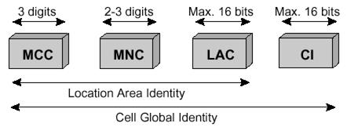
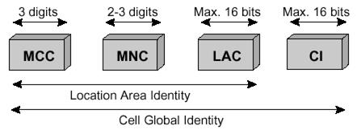

Идентификаторы сети – ряд номеров, которые сеть GSM использует для определения местоположения абонента при установлении соединения. Данные идентификаторы используются для маршрутизации вызовов к MS. Важно, чтобы каждый идентификационный номер был уникальным и был всегда корректно определён.
Идентификаторы абонентов
Номер мобильной станции (MSISDN) уникально определяет абонирование мобильного абонента в номерном плане сети PSTN. Данный номер набирается при установлении входящего соединения к абоненту сети мобильной связи и не содержится на SIM-карте, а сопоставлен с IM SISIM-карты в HLR, и предназначается для передачи номера телефона назначенному абоненту и для получения звонков на телефон [6]. Основной MS ISDN номер используется для идентификации абонента при предоставлении большинства услуг и может быть изменен без замены SIM-карты. Возможно также сопоставить SIM-карте несколько дополнительных MS ISDN для работы с факсимильной связью и передачи данных. MS ISDN входит в состав долговременных данных, хранящихся в HLR и VLR[6]. Структура MSISDN приведена на рис.2.4.
Рис.2.4. Идентификатор MSISDN
CC (Country Code) – код страны;
NDC (National Destination Code) – национальный код пункта назначения;
SN (Subscriber Number) – номер абонента.
MS ISDN, как и IMSI, может достигать 15 цифр и, в соответствии с E.164, состоит из трех частей. При этом конкретные длины составляющих частей регулируются международным и локальным законодательствами, например:
Россия: CC=1 цифра (7) (следует учитывать, что из данного диапазона выделен Казахстан, у которого CC=2 цифры (77)), NDC=3 цифры (например, 903), SN=7 цифр (1234567), итого — 11 цифр (итоговый пример: 7-903-1234567).
Украина: CC=3 цифры (380), NDC=2 цифры (например, 50), SN=7 цифр (1234567), итого — 12 цифр (итоговый пример: 380-50-1234567).
Белоруссия: CC=3 цифры (375), NDC=2 цифры (например, 29), SN=7 цифр (1234567), итого — 12 цифр (итоговый пример: 375-29-1234567).
Узбекистан: CC=3 цифры (998), NDC=2 цифры (например, 90), SN=7 цифр (1234567), итого — 12 цифр (итоговый пример: 998-90-1234567).
Для каждой сети PLMN существует свой NDC. Например, в Ирландии NDC может быть 086 и 087, что указывает на наличие двух операторов PLMN. В России для каждой PLMN определены несколько NDC. Интернациональный номер MSISDN может быть переменной длины. В Узбекистане один NDC – 998.
Интернациональный идентификатор мобильного абонента (IMSI)– это индивидуальный номер каждого абонента, по которому система распознает пользователя мобильной связи, использующего стандарты GSM или UMTS. По данному номеру происходит идентификация абонента через радиоэфир и через всю сеть, а также используется для сигнализации PLMN. IMSI хранится в SIM, в HLR и в обслуживающем VLR.
В момент регистрации в сети аппаратом абонента передается идентификатор IMSI, с помощью которого и происходит идентификация. Для того, чтобы исключить возможность несанкционированного перехвата, отправка этого номера через сеть осуществляется так редко, как только это возможно. Во всех случаях, когда есть такая возможность, вместо него отправляется TMSI, код, который был случайно сгенерирован по определенному алгоритму. TMSI – это идентификатор конкретной мобильной станции, используемый как временный в процессе регистрации в сети, при установке звонка и тому подобное. Его назначение возможно только после успешного завершения аутентификации с помощью IMSI.
Идентификатор в системе GSM содержится в элементарном файле6F07 на SIM-карте. Формат, в котором на SIM-карте хранится IMSI, описан ETSI-стандартом, предусмотренным спецификацией GSM 11.11. Помимо этого, IMSI использует любая мобильная сеть, которая соединена с другими сетями, например, с CDMA или EVDO, идентично сетям GSM. Такой номер связан напрямую с телефоном, но может иметь связь с картой R-UIM, которая выполняет функции SIM-карты для систем CDMA.
Обычно IMSI имеет длину в 15 цифр, но иногда может быть несколько короче. Например, стандартный IMSI из 15 цифр: 250-07-XXXXXXXXXX. По первым трем цифрам (250) определяется страна (Россия). Дальше (07) закодирована мобильная сеть (CMAPTC). Для кода мобильной сети используются две или три цифры – для европейского стандарта две, а для североамериканского – три. Все оставшиеся цифры – это номер идентификации пользователя. E.212ITU – стандарт нумерации, которому соответствует IMSI.
Временный идентификатор мобильного абонента (TMSI)-временный номер IMSI, который дается MS при её регистрации. Он используется для того, чтобы защитить абонента от прослушивания и несанкционированного доступа в радиочастотном тракте.
TMSI используется только для локального абонирования (только в одной зоне MSC/VLR) и изменяется при изменении местоположения (Location Update). Структура TMSI может быть определена каждым оператором, но не может превышать 8 цифр. Поскольку TMSI имеет в два раза меньший размер, чем IMSI, пейджинг в одном кадре осуществляется для двух абонентов, что также сокращает нагрузку на процессор.
Идентификационный номер оборудования MS (IMEI) используется для уникальной идентификации мобильного оборудования в сети. Данный код используется в процедурах обеспечения безопасности связи для идентификации украденного оборудования и предотвращения неавторизованного доступа в сеть. Согласно спецификациям GSM длина IMEI составляет 15 цифр (рис.2.5):
Рис.2.5 Идентификатор IMEI
TAC (Type Approval Code) - код утвержденного типового образца.
FAC (Final Assembly Code) - код окончательно собранного изделия,
присваивает производитель.
SNR (Serial Number) - индивидуальный серийный номер. Идентифицирует полностью все оборудование с учетом кодов TAC и FAC.
Spare - свободные цифры. Зарезервированы для будущего использования. Когда данный код передается в MS, значение данного кода должно быть всегда «0».
Интернациональный идентификатор оборудования MS и номер программного обеспечения (IMEISV) обеспечивает уникальную идентификацию каждой MS, а также обеспечивает соответствие версии программного обеспечения, инсталлированного в MS, разрешенному оператором. Версия программного обеспечения является важным параметром, так как от этого зависят услуги, доступные для MS, а также способность выполнять речевое кодирование. Так, например, PLMN необходимо знать для возможностей речевого кодирования MS при установлении соединения (например, halfrate/fullrate, и т д.). Данные возможности отображаются с помощью IMEISV.Идентификатор IMEISV состоит из (рис.2.6):
Рис.2.6 Идентификатор IMEISV
SVN (Software Version Number) - номер программной версии, позволяет производителю MS идентифицировать различные версии программного обеспечения утверждённого типового образца MS. SVN со значением 99,зарезервирован для будущих целей.
Идентификаторы местоположения. Номер MS в роуминге (MSRN)- временный сетевой номер, назначаемый в течение установления соединения для MS, находящейся в роуминге. MSRN состоит из трёх частей (рис.2.7):
Рис.2.7. Идентификатор MSRN
В этом случае SN означает адрес обслуживающего MSC/VLR.
Идентификатор местоположения (LAI) – временный сетевой идентификатор, который тоже требуется для маршрутизации вызовов. Данный код введён для двух целей:
Пейджинг. В этом случае LAI используется для информирования MSC о LA, в которой находится MS.
Обновление местоположения абонента.
LAI состоит из следующих блоков (рис.2.8):
идентификатор абонент мобильный локальный
Рис.2.8 Идентификатор LAI
Location Area Code (LAC) - код местоположения, максимальная длина LAC составляет 16 бит, что позволяет определить 65536 различных LA внутри одной PLMN.
Cell Global Identity (CGI) используется для идентификации индивидуальной соты внутри LA. Идентификация соты осуществляется посредством добавления параметра Cell Identity (CI) к компонентам LAI. CI имеет размер 16 бит.CGI состоит из (рис.2.9):
 

Рис.2.9. Идентификатор CGI
Глобальный идентификатор соты CGI (Cell Global Identity) используется для идентификации индивидуальной соты внутри LA. Идентификация соты осуществляется посредством добавления параметра Cell Identity (CI) к компонентам LAI. CI имеет размер 16 бит. CGI состоит из (рис.2.10):
Рис.2.10. Идентификатор CGI
Идентификационный код БС (BSIC)дает возможность MS различать соты.
BSIC состоит из (рис.2.11):
Рис.2.11 Идентификатор BSIC
NCC – National Color Code (национальный цветовой код). Используется для того, чтобы разграничивать зоны действия операторов в тех местах, где сети операторов перекрывают друг друга.
BCC – Base station Color Code (цветовой код базовой станции). Используется для того, чтобы различать между собой базовые станции, использующие одинаковые частоты.
Номер местоположения LN, номер определённой географической зоны LA, зона обслуживания MSC/VLR. Данный номер используется для регионального/локального абонирования услуг сети мобильной связи и для тарификации на основе географического местоположения абонента.
LN состоит из идентификатор ДТ (рис.2.12):

Рис.2.12. Идентификатор ДТ
LSP Locally Significant Part. Локально важная часть
Идентификатор локальной зоны абонирования (RSZI). Для каждого регионального абонирования необходимо определить зоны/области. Последнее достигается путем использования идентификатора Regional Subscription Zone Identity (RSZI).
Идентификатор RSZI представлена на рис.2.13.
Рис.2.13 Идентификатор RSZI
ZC - Зональный код. Длина кода - 2 октета.
Конфиденциальная процедура идентификации абонента. Каждый раз, когда MS делает запрос на системные процедуры (LU, попытка вызова или активация сервиса) MSC/VLR ставит новый TMSI. В соответствие с IMSIMSC/VLR передаёт TMSI в MS, которая хранит его в SIM-карте. Сигнализация между MSC/VLR и MS использует только на основе TMSI. Таким образом, реальный номер абонента IMSI не передается через радиоэфир. TMSI в два раза короче IMSI, следовательно, в одном сообщении можно передать пейджинг для двух абонентов. IMSI используется тогда, когда процедура Location Updating выполнена неудачно или не назначен TMSI.